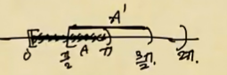

확률 \(\to\) 확률변수 \(\to\) 확률과정 \(\to\) 시계열
Ex1. 동전던지기
\(\Omega = \{H,T\}\): sample space
\(P(\{H\}) = P(\{T\}) = \frac{1}{2}\): prob
\(\Omega\)의 모든(=임의의) 부분집합 \(\Omega^*\)에 대하여 \(P(\Omega^*)\)을 모순없이 정의할 수 있어야함.
- 질문: \(\Omega\)의 임의의 부분집합 \(\Omega^*\)에 대하여 \(P(\Omega^*)\)를 모순없이 정의할 수 있을까?
- 당연한거 아냐?
- 이게 왜 안돼?
- 질문에 대한 대답
즉, \(\Omega\)의 부분집합: \(\emptyset, \Omega, \{H\}, \{T\}\)에 대해 \(P(\emptyset)=0, P(\Omega)=1, P(\{H\})=1/2, P(\{T\})=1/2\) 이런식으로 정의할 수 있어야 된다는 뜻이다.
- 모순없이 의 의미?
- 우리가 상식적으로 확률에 적용가능한 어떠한 연산들이 있음. (확률의 공리 + 기본성질)
- 이러한 연산을 적용해도 상식적인 수준에서 납득이 가야함.
확률의 성질
\(P(\emptyset)=0, P(\Omega)=1, P(\{H\})=1/2, P(\{T\})=1/2\)
\(\emptyset \subset \{H\} \Rightarrow P(\emptyset)<P(\{H\})\)
\(\begin{align*} \{H\} \cap \{T\} = \emptyset &\Rightarrow P(\{H\} \cup \{T\}) = P(\Omega)=1 \\ &=P(\{H\}) +P(\{T\})=1\end{align*}\)
\(\begin{align*}\Omega - \{H\} = \{T\} &\Rightarrow P(\Omega-\{H\}) = P(\{T\})=1/2 \\ &=P(\Omega)-P(\{H\})=1/2\end{align*}\)
모순없이 잘 정의되었다. 왜 확률을 정의하는 것이 어렵다는 걸까? \(\to\) 앞의 예제에서는 \(\Omega\)의 원소가 유한인 경우이지만 무한이라면 확률을 정의하기 쉽지 않다.
Ex2. 바늘이 하나만 있는 시계
시계바늘을 돌려서 나오는 각도를 재는 일 \(\Leftrightarrow\) \([0,2\pi)\) 사이의 숫자중에 하나를 뽑는 일
Sample space: \(\Omega = [0,2\pi]\)
Prob: \(\forall \Omega^* \subset \Omega, \quad P(\Omega^*)=\frac{m(\Omega^*)}{m(\Omega)}\)
- 질문: 바늘을 랜덤으로 돌렸을 때 12시-6시 사이에 바늘이 있을 확률? \(\frac{1}{2}\)
\(\Omega\)의 부분집합을 \(\Omega^*\)라 하자.
- \(\Omega^* = [0,\pi)\)
- \(P(\Omega^*)= \frac{1}{2}\)
\(\forall \Omega^* \subset \Omega, \quad P(\Omega^*)=\frac{m(\Omega^*)}{m(\Omega)}\)
단, 여기에서 \(m\)은 구간의 길이를 재는 함수.
연습 : \(m\)의 사용 - \(m(\Omega)=m\big([0,2\pi)\big)=2\pi\) - \(m(\Omega^*) = m\big([0,\pi)\big)= \pi\)
- 위와 같은 방식으로 확률을 정의하면 잘 정의될까? 이게 쉽지 않음. 왜냐하면 확률을 잘 정의하기 위해서는
\(\Omega\)의 모든 부분집합 \(\Omega^*\)에 대하여 \(P(\Omega^*)\)를 모순없이 정의할 수 있어야하는데, 이게 쉬운일이 아님.
- 도전적 질문
- \(\emptyset\subset \Omega, \quad P(\Omega)=0\)
- \([0,\pi) \subset \Omega, \quad \frac{m([0,\pi)}{m([0,2\pi))}=\frac{0}{2\pi}=0\)
질문1 \(\{0\} \subset \Omega, \quad P(\{0\})=\frac{m(\{0\})}{m([0,2\pi))}=\frac{0}{2\pi}=0\) - 점 하나의 길이는 \(0\)??
왜 \(0\)이지? 점은 원래 길이가 없는데 굳이 재야한다면 \(0\)이라고 대답한다. 찝찝하지만 여기까지는 별 문제가 없다.
질문2 \(\emptyset \subset \{0\} \Rightarrow P(\emptyset) \leq P(\{0\})\)
우측 부등호에 등호를 넣어줌으로써 디펜스
질문3 \(\{0,1\} \subset \Omega \Rightarrow P(\{0,1\})=P(\{0\}) + P(\{1\})=0+0=0\)
- \(\{0,1\} = \{0\} \cup \{1\}\)
- \(\{0\} \cap \{1\} = \emptyset\)
질문4 \([0,2\pi)=\) 무수히 많은 점들의 집합
- 무수히 많은 것도 끕이 있다. (countable many, uncountable many)
- 유리수 정도로 무수히 많은 것 \(\to\)
countable many - 무리수 정도로 무수히 많은 것 \(\to\)
uncountable many
무수히 많은 점들의 집합이라고 하면 둘 중 뭔지 모르겠지만, 다 더해서 길이가 있다는 것은 uncountable many 겠지?
- 점 하나의 길이 \(= 0\)
- \(0\)을 무한번 더해도 \(0\)
- \([0,2\pi)\)의 길이 \(= 0+0+0+\dots = 0?\) \(\Rightarrow 2\pi\)
논리전개는 틀린게 없어보이는데 말이 안됨. \([0,2\pi)\) 의 길이는 \(2\pi\) 아냐?
디펜스 : 무한번 더해도 \(0\) 여기를 걸고 넘어지자. 점을 하나 합쳐도 점, 두개 합쳐도 점, 3개 합쳐도 점인데 무한번 합치면? 점이 선이 될 수 있잖아, 그런데 선은 길이가 될 수 있다고 했잖아. 그러니까 \(2\pi\)가 되는거야!
유한번 더하면 \(0\)이 맞는데 무한번 더하면 달라지는거야
질문5 \(A = [0,2\pi) \cap \mathbb{Q}\)
결론: \(0\)도 아니고, \(2\pi\)도 아니야..
\(A\)의 원소는 무한개, \(m(A) = 2\pi\)
\(A' = [0,2\pi) \cap (\mathbb{R} - \mathbb{Q})\), \(\quad(\mathbb{R} - \mathbb{Q})\) : 무리수 집합
\(m(A') = ?\)
\(P(A\cup A') = P(A) + P(A') = \frac{m(A)}{m(\Omega)}+\frac{m(A')}{m(\Omega)}\)
이렇게 되면 \(m(A')=0\) 이라는 소리인데 이건 말이안돼.. 무리수가 더 많고 무한개 더했는데??
그럼 결론은 \(A\)의 길이를 \(2\pi\) 라고 대답못해.. 근데 또 \(0\)이라고 할 수도 없는데? 에매하게 대답할 수밖에.
디펜스
- \(A\)의 원소는 무한개
- \(m(A) = a\) \(\rightarrow\)그냥 \(0\) 이야, \(\quad 0<a<2\pi\) (구체적으로 \(a\)가 뭔지는 나도 몰라.)
- \(m(A') = 2\pi -a\)
유리수만 뽑으면 길이가 \(a\)야. 그럼 무리수만 뽑으면 \(2\pi-a\) 겠지? 이렇게 디펜스를 하고 넘어가자..
질문6 디펜스 불가능한 질문
- \(A=[0,\pi) \cap \mathbb{Q}\)
- \(A' = A \oplus \frac{\pi}{2}\) (\(A\)를 \(\frac{\pi}{2}\)만큼 평행이동한 집합을 \(A'\)라고 하자.)

- \(A\)의 모든원소: 유리수 \(\to\) 유리수 다 더하면 길이가 빵!
- \(A'\)의 모든 원소: 무리수 \(\to\) \([0,2\pi)\) 구간 안에 있는 값들을 다 포함해야지 길이가 생긴다. 고로 무리수여도 이건 길이가 빵!
유리수 만큼의 길이를 평행이동 한거니까 그냥 유리수 숫자만큼의 무리수가 생긴 것 뿐
\(\Rightarrow A\cap A' = \emptyset\) (\(A\)와 \(A'\)은 서로소)
그럼 \(P(A\cup A') = P(A) + P(A') = \frac{m(A)}{m(\Omega)}+\frac{m(A')}{m(\Omega)}\)이 성립한다.
\(= \frac{m(A)}{2\pi}+\frac{m(A')}{2\pi}= \frac{a/2}{2\pi}+\frac{a/2}{2\pi}=\frac{a}{2\pi}\)
결국 종합하면, \(m(A) + m(A') = a\)라는 소린데
그림을 참고해서 직접 계산해보면 각각의 길이에 겹치는 부분의 길이를 뺀 \(\frac{a}{2}+\frac{a}{2}-\frac{a}{4}=\frac{3}{4}a\)일 것 같은데, \(a\)라고 주장하고 있는것이다.
우리가 알고있는 길이 상식과는 다르다. 모순발생!
이건 디펜스가 불가능한 질문이다. 즉, 지금까지 했던 말이 다 거짓!! 확률을 이렇게 \(\frac{m(\Omega^*)}{m(\Omega)}\)정의하는 것부터가 말이 안됨. 이렇게 정의할 수 없다.
약속: 받아들이기^^
(i) 한 점에 대한 길이는 \(0\)
(ii) \([0,2\pi)\) 사이의 모든 유리수를 합친 집합의 길이\(=0\) - 아까 무한히 점을 더하면 선이된다? 다 없는소리.. (유한한 점을 더하면 길이가 0이된다.)
(iii) \([0,2\pi)\) 사이의 모든 무리수를 합친 집합의 길이\(=2\pi\)
위의 내용은 Measure Theory의 내용입니다. 그냥 받아들입시다~
이제 모든 질문들에 대해서 깔끔하게 디펜스가 된다.
이제 이 정의가 다시 살아나게 된다. \(\{0\} \subset \Omega, \quad P(\{0\})=\frac{m(\{0\})}{m([0,2\pi))}=\frac{0}{2\pi}=0\)
주장 (X) : 틀린주장
위의 3가지 원리. 즉 (i)-(iii)를 사용하면(=받아들이면) \([0,2\pi)\)의 어떤 부분집합 \(\Omega^*\)에 대해서도 \(\Omega^*\)의 길이를 모순없이 정의할 수 있다.
길이를 잴 수 없는 집합이 존재함 : 비탈리 집합